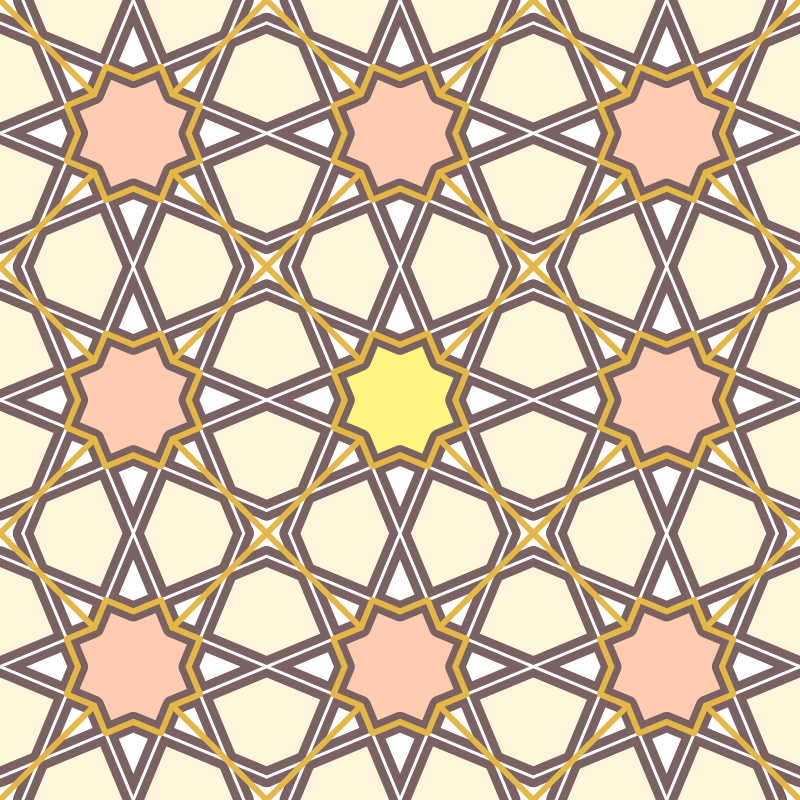

8.6
Tessellation
| (require tessellation) | package: tessellation |
Tessellation is a library for for creating tessellating geometric patterns. Instead of depending on generative algorithms, this library’s approach depends on using a base-grid, then using that grid to define a tessellation pattern. set-scale. xxx. let.
procedure
(set-scale size) → void?
size : symbol?
Set the scale to display the images. The size is a flag indicating how big to display. Valid input is 'small, 'medium, 'large, 'x-large.
syntax
(generate-grid curve ...)
curve : curve?
Generates a grid from the input curves. Curves can refer to intersection points of previous curves by referring to their name. You may use to view the current state of the grid to see which points are bound.
Example of creating a simple grid:
(generate-grid (circle 1) (curve (pt -1 -1) .. (pt 1 1)) (curve (pt -1 1) .. (pt 1 -1)) (curve a .. c))
value
square-frame : (listof shape?)
This is a pre-defined list of the curves of the perimiter of the square contained by the points (-1, -1) and (1, 1). This is also the tesselation bountry. This can be used directly with generate-grid.
syntax
(with-grid grid body ...)
grid : base-grid?
body : any?
Bind the points of grid to variable names so that names can be referred to in body. In total there are 702 available variable names to be bound.
syntax
(tessellate grid width-spec height-spec curves ...)
width-spec =
| (racket positive-integer?) | range-spec height-spec =
| positive-integer? | range-spec range-spec =
| (start-ct end-ct)
curves : (listof pict?)
procedure
(display-grid grid) → pict?
grid : base-grid?
Takes a created grid and generates a pict. This is helpful to use when designing a layout for your design. Each intersection will be displayed as a node with a letter on it. You can use this letter as a pre-defined point inside special forms such as tessellate, with-grid, and generate-grid.
procedure
(vmirror curves) → (listof curve?)
curves : (listof curve?)
procedure
(hmirror curves) → (listof curve?)
curves : (listof curve?)
vmirror and hmirror define functions that operate on lists of curves. For each curve passed in in the input list, two curves are returned: the original on a curve reflected across the x axis for vmirror and the y axis for hmirror.
procedure
(rotate/4 curves) → (listof curve?)
curves : (listof curve?)
procedure
(rotate/8 curves) → (listof curve?)
curves : (listof curve?)
procedure
(rotate/16 curves) → (listof curve?)
curves : (listof curve?)
These functions return 4/8/16 curves for every curve passed into curves with each curve rotated 90/45/22.5 degrees around the origin.
procedure
(rotate90 curves) → (listof curve?)
curves : (listof curve?)
procedure
(rotate45 curves) → (listof curve?)
curves : (listof curve?)
Simmilar to the Xmirror and rotate/X functions, these take a list of curves and returns a list of twice the size, with every curve rotated 90/45 degrees clockwise across the origin.
Below is an example of what can be built with this library:

The code to generate this is as follows:
(define g (generate-grid (circle 1) (curve (pt -1 1) .. (pt 1 -1)) (curve (pt -1 -1) .. (pt 1 1)) (curve (pt -1 -1) .. (pt -1 1)) (curve (pt -1 1) .. (pt 1 1)) (curve (pt 1 1) .. (pt 1 -1)) (curve (pt -1 -1) .. (pt 1 -1)) (rotate90 (hmirror (vmirror (curve (med -1 a q) .. q)))) (curve (pt 0 -1) .. (pt 0 1)) (curve (pt -1 0) .. (pt 1 0)))) (with-window (window -1 5 -1 5) (let ((apricot (make-color* 255 204 178)) (yellow (make-color* 255 244 130)) (cornsilk (make-color* 255 246 220)) (deep-taupe (make-color* 122 98 99)) (brown (make-color* 228 183 71)) (inner-star (with-grid g (curve aq -- am -- v -- ai -- ah -- al -- w -- ag -- aj -- an -- u -- ak -- ap -- ao -- x -- ar -- cycle)))) (draw (color apricot (tessellate g 3 3 (fill inner-star))) (color yellow (tessellate g (1 1) (1 1) (fill inner-star))) (color cornsilk (tessellate g 3 3 (fill (rotate90 (hmirror (vmirror (curve ab -- a -- ai -- k -- cycle))))))) (color deep-taupe (penwidth 20 (tessellate g 3 3 (curve v -- k -- w -- q -- u -- t -- x -- f -- v) (rotate/4 (curve ab -- aq -- af))))) (color "white" (penwidth 3 (tessellate g 3 3 (curve v -- k -- w -- q -- u -- t -- x -- f -- v) (rotate/4 (curve ab -- aq -- af))))) (penwidth 6 (color brown (tessellate g 3 3 inner-star (vmirror (hmirror (curve h -- v)))))))))